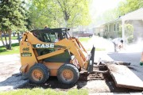
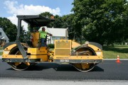
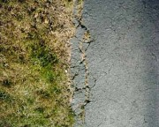
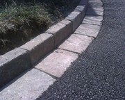
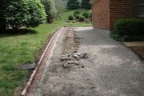
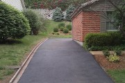

|
Главная
/ Строительство дорог
СТРОИТЕЛЬСТВО ДОРОГ Лидирующие позиции в области строительства дорог в столице занимает ООО «ДорТрансСнаб». Техническая оснащённость нашей компании делает возможным производить на высоком уровне все этапы дорожного строительства: создание проектов магистралей различной степени сложности, асфальтирование и ремонт дорожного покрытия, рациональное благоустройство прилегающих территорий, производство различных дорожных работ. Производственный отдел компании обеспечивает качественную сдачу заказа точно в срок.
 
строительство дорог вблизи жилых сооружений порой
требует использования специальной негабаритной техники
Специалистам компании по плечу любые трудности, которые возникают в процессе строительства магистралей, асфальтирования и различных дорожных работ. Обеспечить сдачу в эксплуатацию объекта любой степени сложности точно в срок позволяет колоссальный опыт сотрудников. Это говорит о высокой степени ответственности и серьёзности отношения к обязательствам перед заказчиком. Основным направлением работы ООО «ДорТрансСнаб» является проектирование, строительство и ремонт дорог в столице и области. Производственный отдел компании отвечает за асфальтирование, ремонт, монтажные работы (установка бортового камня, работы по укладке плитки и другое), последующее благоустройство территории. Производственные и технические возможности ООО «ДорТрансСнаб» позволяют реализовывать даже такие сложные и глобальные проекты, как строительство скоростных трасс, дорог федерального и межрайонного значения. Все без исключения объекты, проектированием и строительством которых занимались наши специалисты, обладают отличными характеристиками в эксплуатации, безопасны, надёжны и безупречны с точки зрения эстетики.
Использование в проектировании дороги инновационных технологий, проверенных временем, позволяет добиться наиболее высокого качества. Современное и качественное строительство дорог допускает использование только новейших строительных материалов. Высокая техническая оснащённость позволяет ускорить работы по проектированию, асфальтированию, ремонту и благоустройству. Технический парк компании представлен высокопроизводительной, неприхотливой и современной техникой. Новейшие тенденции в мире строительства, собственные разработки и изобретения продуктивно используются на этапе проектирования, асфальтирования, ямочного ремонта и благоустройства Москвы.
Дорожное строительство востребовано! Новостями о строительстве или ремонте магистралей изобилуют эфиры программ, полосы газет и интернет-порталов. Это связано не только с объёмами финансирования, но и пониманием сотрудниками муниципальных органов важности строительства дорог, как гаранта процветания региона.
Негативный опыт ведения дорожного хозяйства страны в прошлом спровоцировал повышенный спрос на работы по проектированию, строительству, асфальтированию, ремонту дорог и благоустройству территорий сегодня. Основной проблемой раньше являлось недостаточное финансирование области дорожного строительства, а результат в виде выбоин, разбитых одноколеек и жалоб водителей давно перестал устраивать общественность.
Основная причина актуальности услуг по проектированию и реконструкции магистралей – это рост грузовых и пассажирских перевозок, который объясняется относительной экономической стабильностью и высокой покупательской способностью. Так, возросшее количество грузовых автомобилей, фур отрицательно сказалось на пропускной способности многих магистралей. Пробки в Москве бьют все мыслимые и немыслимые рекорды. Очевидно, что назрел вопрос о глобальной реконструкции и ремонте многих магистральных трасс.
Дорогу построили, а благоустроить забыли? Благоустройство территории – это важный этап строительства всей магистрали. Комплексное благоустройство территории по принципу «всё включено» - это самая востребованная услуга в Москве и в Московской области. Облагородить внешний вид местности после строительства дороги, укладки асфальта, ремонта, других дорожных работ – это значит благоустроить территорию. Строители должны убрать весь мусор, оставшийся после проведения строительных работ, озеленить местность, посадить газонные травы.
 
кромка старой дороги до после асфальтирования
асфальтирования и благоустройства
Однако, не все компании, к сожалению, знакомы с международными стандартами по благоустройству территории и привычно игнорируют работы по приведению в порядок дорожного полотна. Нанесение дорожной разметки, установка бортового камня, обустройство пешеходных переходов, съездов также входит в понятие благоустройства территории. Например, проезжая часть должна быть отгорожена бортовым камнем, тротуар обязательно выложен плиткой. Стоит акцентировать внимание на важности обязательной установки бортового камня. Только при установке бортового камня дорожное полотно прослужит гарантировано долго. Способность бортового камня сдерживать сточные и дождевые воды не позволяет разрушаться дорожному полотну. Бортовой камень обозначает границы дороги для пешехода и водителя. Бортовой камень – это не только элемент безопасности на дороге, но и эстетический элемент.
 
строительство дорог в непосредственной близости от жилых домов
требует особой аккуратности и внимания к благоустройству
Наша компания рада предложить клиентам все виды дорожных и строительных работ. Асфальтирование, ремонт дорог любой сложности, комплексное благоустройство территорий с укладкой тротуарной плитки и установкой бортового камня, вывоз и уборка мусора, услуги по озеленению и ландшафтному дизайну предлагает своим клиентам ООО «ДорТрансСнаб». Гарантией качества работы компании является огромное количество качественно и в срок выполненных объектов. Высокий технический потенциал и производительный потенциал позволяют ООО «ДорТрансСнаб» на высоком уровне производить работы по асфальтированию, ремонту дорожного покрытия, благоустройству территорий с использованием декоративных материалов (бортового камня и тротуарной плитки). Наша организация заинтересована в продуктивном сотрудничестве с заказчиками, предъявляющими высокие требования к качеству дорожно-строительных работ.
|
|||||||||||||||
|
|||||||||||||||